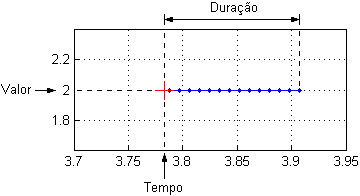
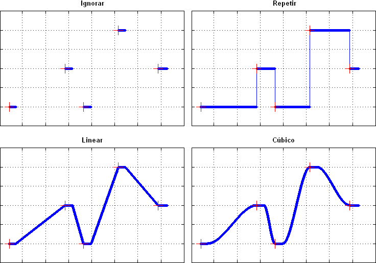
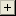
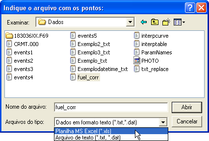
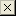

| Menu Ferramentas |
|
Essa
ferramenta
permite que o
usuário crie um parâmetro a partir de dados provenientes de uma tabela
externa, contendo uma lista de tempos iniciais, valores
e durações ao longo do voo. Essa ferramenta é útil para a inserção
de dados anotados provenientes de outras fontes ao arquivo
principal ou para criar parâmetros contínuos a partir de
poucas
observações ao longo do voo.
- Selecione em “x” um parâmetro adequado de tempo
(monotônico, crescente
e sem pontos inválidos) para ser usado como referência;
- Clique em “Ferramentas ► Criação de parâmetro a partir de tabela".

Descrição
A janela de criação de parâmetro a partir de tabela possui as seguintes áreas:
- Gráfico:
Apresenta o plote atual do parâmetro, conforme os dados inseridos na tabela de pontos de controle (em azul escuro) e os pontos
de controle (cruzes vermelhas);
- Seletor do método de interpolação: Permite
a
seleção do método de interpolação
dos pontos intermediários (entre os pontos de controle). As opções
são: Ignorar, Repetir, Vizinho, Linear, Spline e
Cúbico (ver descrição abaixo);
- Coordenadas do
cursor: Apresenta as
coordenadas do cursor, quando o mesmo estiver posicionado
sobre um dos gráficos. O parâmetro x é apresentado na forma HH:MM:SS.MS.
Lógica de
Operação
A criação do parâmetro
é baseada nos dados apresentados na lista de pontos de controle.
Cada ponto de controle define um trecho do parâmetro e é descrito por
três informações:
- Tempo: tempo de referência para a criação de cada trecho do parâmetro;
- Valor: valor do parâmetro no tempo de referência;
- Duração: tamanho do trecho, ou seja, o tempo em que o
parâmetro permanece com o valor especificado (pode ser nulo, positivo
ou negativo com relação ao tempo de referência).

Os pontos intermediários entre os trechos podem ser interpolados de acordo com o método desejado. Os métodos disponíveis são:
- Ignorar: trechos intermediários são mantidos como "NaN";
- Repetir: cada trecho intermediário mantém o valor do ponto de controle anterior;
- Vizinho: os pontos do trecho intermediário recebem o valor do ponto de controle mais próximo;
- Linear, spline, cúbico: os pontos do trecho intermediário recebem o valor do ponto de controle mais próximo;.

Operação
Para alterar o
zoom do gráfico:
- Para aproximar o zoom,
use o
mouse para definir o intervalo desejado, clicando duas vezes com o
botão
esquerdo no gráfico principal.
- Para afastar o zoom,
clique
com o botão direito do mouse sobre o gráfico principal.
- Para restaurar o zoom,
exibindo toda a extensão dos dados: Dê um duplo-clique com qualquer
botão do
mouse sobre o gráfico principal.
Para deslocar a
abscissa do gráfico (eixo x):
- Use o botão para
deslocar o gráfico 20% para a esquerda.
- Use o botão para
deslocar o gráfico 20% para a direita.
Para
acrescentar um ponto de controle:
- Clique no botão 
- Insira os dados do ponto de controle e
clique “OK”.

Os valores de tempo e duração podem ser inseridos em qualquer formato
de tempo reconhecido
pelo R_DAT.
Para
acrescentar um ponto de controle clicando sobre o
gráfico:
- Clique no botão ;
- Clique no ponto desejado sobre o gráfico, com
o botão
esquerdo do mouse (use as coordenadas do cursor como referência) e insira a duração manualmente.
Para cancelar a operação, clique com o botão direito do
mouse.
Para alterar as
coordenadas de um ponto de controle:
- Selecione o ponto desejado na lista;
- Clique no botão ;
- Altere as coordenadas conforme desejado e clique “OK”.

Para remover um
ponto de controle:
- Selecione na lista o ponto que deseja remover;
- Clique no botão e
confirme.
Para importar
uma lista de pontos:
- Clique no botão ;

- No campo “Arquivos do tipo”, selecione
o tipo
do arquivo que contém a lista de pontos. As opções são: Dados em
formato texto
(.txt
ou .dat) e Planilha
Excel (.xls);
- Localize o arquivo desejado e clique “Abrir”.
A formatação dos arquivos deve ser a seguinte:
Arquivos de texto: três colunas numéricas (tempo, valor e duração)
separadas por
tabulação ou espaço. Pode haver linhas de cabeçalho.
Planilhas Excel: três colunas numéricas (tempo, valor e duração). Pode haver linhas de cabeçalho.
Os valores de tempo podem estar em qualquer formato reconhecido pelo R_DAT.
Exemplos:

Para remover
todos os pontos de controle:
- Clique no botão 
Sair
Para confirmar a operação, clique no botão “OK” e confirme.
Para descartar a operação, clique no botão “Cancela”.
Ao clicar "OK", o usuário deverá indicar o nome do novo parâmetro:

Após definir o
nome e pressionar “OK”, o novo parâmetro será
acrescentado à penúltima posição das matrizes de trabalho (antes de “No.OBS.”).
| |
Padronização de nomes de unidades |
Correção por pontos de controle | |